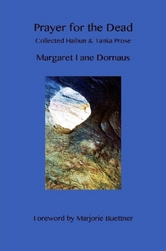

Patricia Prime
Auckland, New Zealand
A Review of Margaret Lane Dornaus' Prayer for the Dead: Collected Haibun & Tanka Prose
Margaret Lane Dornaus, Prayer for the Dead: Collected Haibun & Tanka Prose, Singing Moon Press, Ozark, AR, USA. (2016). Paperback, 107 pp. ISBN: 978-0-9982114-0-6. US$15 from Lulu, or email singingmoonpoetry@gmail.com for signed copies.
Prayer for the Dead by Margaret Lane Dornaus opens with a Foreword by Marjorie Buettner in which she says the collection “is a touching tribute to those individuals who have defined the poet by their existence: mother, father, grandparent, siblings, husband and friends.”
The first section, “hide and seek the ring around her memory”, begins with “Party People”, which enacts a scene many children have witnessed: lying in bed, listening to the sounds of a grown-up’s party. Dornhaus gently captures the child’s excitement as she tiptoes to the landing, where she catches a “glimpse into a world of chiffon and pearls.” The next haibun recalls her father’s voice as he comments on a film about Paris; followed by the poem, “The Mother Tongue”, about her great-grandfather who spoke German and passed his dialect on to her through her father. She writes of herself as a child, recalling her father’s words:
Say it again, I’d cry. And like a dutiful child, my father would repeat for me the words that had cowed him when he himself was a child. Again. And soon we would both be smiling, and laughing.
The father’s grandmother in “Verboten” features a woman on her way to America, pregnant with her first child, although “no more than a child herself at seventeen.”
In the title poem, “Prayer for the Dead”, the poet’s pen-pal sends her photographs of the town: “my pen-pal quickly gets to the heart of our ancestor’s village. ‘In the old days,’ Ragnar writes, ‘Jews lived there.’
In the next section, “mummy painting the young girl’s eyes wide open”, the first haibun, “Goethe’s Oak” describes a monument to the poet outside the doors to a preserved crematorium. On her last night in Weimar, the poet is treated to dinner, but is unable to touch her food or enter conversation. “The Kindness of Strangers” is a reflection on the bombing of a building in which many people lost their lives, as she describes in this passage:
The collection of 149 adult- and 19 child-sized bronze-and-glass chairs representing the victims of the Murrah Federal Building bombing seems to float about the adjacent reflecting pool. At sundown the chair’s glass bases take on a soft, eerie glow illuminating the names of the dead. ‘Such beauty from such sadness,’ Chef Lou observes.
“Defining Moment: 9/11, 2001”, is a date everyone remembers, likely as not, watching the horrific events unfolding on television, as Dornaus expresses in this haibun:
On my 19-inch television screen, a nightmare was unfolding. Only it wasn’t a nightmare. I was awake, safe, in my home in Arkansas, sinking deeper into my mother’s easy chair, the remote clenched in one hand as I watched a plane fly into the north tower of New York’s Trade Center before exploding into flames and black mushroom clouds of smoke.
The haibun in this book tend to be like a tendril of a vine that has been released and fallen to the ground: at the top, there is a point of release, then a dangling through air as the lines fall down the page and come to rest. The haibun in the following section, “winter night a litany of falling stars”, capture scenes about sharecropping, courting couples, a day trip to a mountain town, and more. “The River Road” works its magic with two paragraphs of prose and a final tanka. We enter the poem with a scene that speaks of a guide “from a long line of share-cropping Creoles”, who takes the poet on a tour through a mansion house. But then the poem skips to the dried leaves of the bedding and the glass receptacles,
placed strategically over the prostrate torsos of those unfortunates who believed their maladies – from chest colds to bronchial infections and worse – could be coerced from failing bodies and trapped inside the glass vials as if by osmosis.
The poem, “Sant’Agnese in Agone”, focuses on the Christian martyr, St. Agnes, “persecuted and martyred at the age of twelve for refusing to marry any number of wealthy statesmen.” It is a heart-breaking tale. In “Defining Moment: July 20, 1969”, Dornaus recalls “the culmination of an era” with the landing on the moon:
All we knew was that we’d never find ourselves staring up at the moon and wondering if the outline of a man we saw there was real or imaginary.
The poem ends with the lovely haiku:
sweet sixteen
waltzing with my father
on a moonlit night
The following section, “total eclipse viewing the moon without you”, begins with “All-Stars”, followed by “Lost and Found” and “Why I Overtip at the Truck Stop”, exuberant tales of the death of a loved teacher, a loved one who made broth and a waitress who “instinctively knew my back story”. The section ends with “Reentry”, a poem which recalls reading someone’s journal:
You carry on with your accounting through sleet and fog, burst pipes and a power outage. Until just before Christmas when you write, Feeling great today . . . Then more silence. And then more.
“Returning the owl’s call windchimes”, the succeeding section, recalls memories of a young couple, the poet’s mother, a tour of Pompeii and other poetic themes. “In My Inbox . . .” works from an interior point of view, as the poet recalls a “a star-studded auction”: The remaining estate of the “World’s Most Glamorous Grandmother”, including a letter from a romantic liaison between Ernest Hemingway and Marlene.
Still, there’s the letter – one of 50-odd letters the couple exchanged during their romantically charged friendship.
pheromones . . .
the stale remains of smoke
and mirrors
“Skipped generations the Irish in her eyes” calls up the past. Some of the poems touch on scenes of a journey where, in “Casseroles and Corn”, she feels she is “imposing myself with a vengeance on people I barely know: my cousin Art, a small man nearing retirement and the keeper of the family archives”. In “Three-quarter Time” the focus is on her father, who spent “part of his childhood in his grandparents’ house on Koch Street in an immigrant neighbourhood.”
Then there is the delightful travel scene through the Rhine Valley in the poem, “Strangers on a Train”:
Travelling through the fairy tale world of the Rhine Valley, I watch old castles rise from the surrounding mountainside as I try to reconcile their charm with the shadow of history. It’s then that a woman across from me offers up a piece of her own history – as if it were a tidbit she might serve with tea or coffee.
There are poems that contrast death and extremity in the section “cobwebs never easy letting go”. “After the Funeral” focuses on relaying “our phone conversation”; “The Gathering” in which the poet is reminded of someone from her past, and his daughter who died some years ago, and in “Bush Tucker” a meeting with “tourists from a geriatric bus tour” who are travelling in the outback of Australia, and the poem “Confessions from the Mother Road” about the poet’s ailing mother. The prose paragraph ends with this surprising conclusion:
And up until recently she has had sex on a more regular basis than I have.
Route 66 –
the museum’s black-and white
checkerboard flooring
“Skywriting all the disappearing words between us”, opens a reflective mirror on what might be the heart of the poet’s oeuvre. The aptly titled “Last Picture Show” contains the lines about her mother in the period before she dies, when she still had her faculties for reading, writing and looking at old photographs:
Most nights, I find my mother incessantly reading – a pencil and pad at her side for capturing quotes she likes or words she wants to look up later.
And “Reading by Moonlight” tells us that her mother is “The last survivor in a family of thirteen children, my mother has – if not a first-name – at least more than a passing acquaintance with Death.”
“City lights homesick for the stars”, contains the fine poem, “Ground Zero”, in which the poet visits the site with her sister. “Circle Line” is a short poem about being on board a ship, which seems “electrified by language” and “Death Song” is about her dying mother, who “whispers in a weak voice for cake”:
I switch on the boom box I’ve placed next to her side of the bed. Beethoven. Long-stemmed red roses I bought her a few days before are in full bloom in the cut-glass vase on her dresser.
In the concluding section, “heat lightning the way your hand rests in mine”, the poet writes about the shooting of the President in 1963, her sister’s “new best friend”, the unmarked graves of relatives, and, in “Letting Go”, she is driving, with a loved one’s ashes stowed within arm’s reach. In the final poem, “Anniversary”, (a one-paragraph poem) she writes about a list, not a shopping list, but one she is not expecting to surface. The poem begins:
It’s on my list. Not the one I write down: coffee; cat food; toilet paper. Or the one I carry around in my head: laundry; dishes; floors. But a list, nonetheless, waiting to resurface when I least expect it.
The poems in Prayer for the Dead celebrate and enjoy the long histories of a life and loves contained in the moment. As exercises in condensation, compression and concentration, they greatly value finding the moment in that quick hop-skip-and-jump when everything seems to stop in a kind of suspension. This is the pleasure of recalling memories, delightfully embodying the transitory and pleasures of one who watches, and takes down her experiences in the form of poetry. A poet’s job is to pose the right questions and, in a variety of prose and poetry with delicious metaphorical and aural language, Dornaus does it again and again.
|